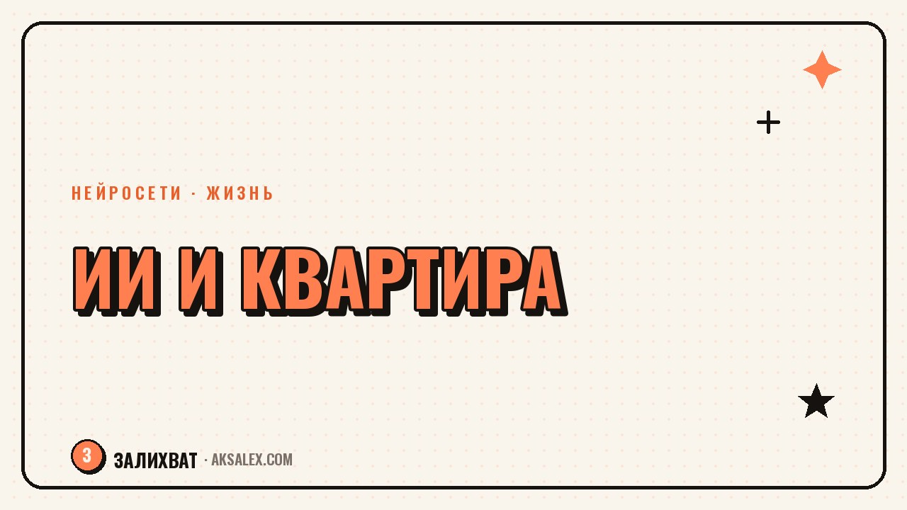

Нейросети при покупке квартиры: что проверить

Покупка квартиры - это десятки страниц документов, незнакомые термины в договоре и калькулятор ипотеки, который выдаёт разные цифры на разных сайтах. Нейросеть не подпишет за тебя договор и не заменит юриста, но может быстро объяснить непонятный пункт, прикинуть реальную переплату по ипотеке и помочь составить список вопросов для продавца или банка. Разбираем, где ИИ реально экономит время и нервы, а где лучше не экономить и идти к живому специалисту.
Зачем подключать нейросеть к покупке квартиры
Сделка с недвижимостью пугает количеством незнакомых слов: обременение, залог, эскроу, кадастровая стоимость. Юрист объясняет это за деньги и по часам, а нейросеть расшифрует любой термин сразу, как только он встретился в выписке или договоре.
Что ИИ точно не заменит
Юридическую проверку истории квартиры, выписку из ЕГРН и подтверждение подлинности документов нейросеть не сделает - для этого нужны официальные базы и, в сложных случаях, живой юрист. ИИ хорош как первый фильтр и переводчик с юридического на человеческий.
Проверка документов и договора через чат с ИИ
Рабочий сценарий: загружаешь в чат текст договора купли-продажи (без персональных данных продавца) и просишь выделить рискованные пункты - условия расторжения, ответственность сторон, сроки освобождения квартиры. Нейросеть подсвечивает формулировки, которые стоит уточнить у юриста.
Похожий приём работает с выпиской из ЕГРН: если там встретилось слово «обременение» или указано несколько собственников, можно спросить у модели, что это значит на практике. Это помогает прийти к специалисту с конкретными вопросами, а не с общим недоумением.
- Не загружай в чат оригиналы с персональными данными
- Проси модель объяснить термин простыми словами с примером
- Формируй список вопросов для юриста по итогам разбора
- Сверяй юридическую трактовку с актуальным законодательством
Нейросеть - хороший переводчик с юридического языка на человеческий. Но подпись под договором ставишь ты, а не чат-бот.
Расчёт ипотеки и реальной стоимости квартиры
Банковский калькулятор обычно показывает только базовый платёж без страховки и комиссий. Нейросеть за минуту пересчитает несколько сценариев с разным взносом, сроком и ставкой - и собрать их в одну таблицу удобнее, чем менять цифры на сайте каждого банка.
Как сформулировать запрос правильно
Указывай точные цифры: стоимость квартиры, сумму взноса, ставку и срок. Проси показать не только платёж, но и итоговую переплату за весь срок - эта цифра впечатляет сильнее размера платежа.
| Сценарий ипотеки | Взнос | Переплата за весь срок |
|---|---|---|
| 20 лет, ставка 16% | 20% | около 2.1x от суммы кредита |
| 15 лет, ставка 16% | 20% | около 1.6x от суммы кредита |
| 20 лет, ставка 16% | 30% | ниже за счёт меньшей суммы кредита |
| 10 лет, ставка 16% | 30% | наименьшая, но выше платёж в месяц |
Подводные камни, которые помогает заметить ИИ
Частая ошибка - не заметить несоответствие площади в документах или пропустить пункт про зарегистрированных несовершеннолетних, которых непросто выписать. Нейросеть составит чек-лист проверки под конкретный тип сделки: вторичка, новостройка, маткапитал.
Готовый чек-лист для вторички
Попроси модель составить список: документы на собственность, число собственников и их согласие, наличие несовершеннолетних, долги по коммуналке, факт перепланировки и её легализация, срок владения для налогов продавца.
Какие сервисы использовать и с какими ограничениями
Для разбора договора и расчётов подходят универсальные чат-боты - важнее удобство интерфейса и лимиты бесплатной версии. Для финальной проверки нужны официальные сервисы: выписка из ЕГРН через Росреестр, проверка банкротства продавца, проверка паспорта по базе МВД.
- Используй нейросеть для черновой расшифровки терминов и расчётов
- Финальную чистоту проверяй через официальные базы и юриста
- Сохраняй переписку с ИИ как заметки для разговора со специалистом
- Не принимай решение о покупке только на основе ответа чат-бота
Частые вопросы
Можно ли полностью доверить проверку документов нейросети?
Нет, окончательную юридическую проверку всё равно нужно делать через официальные базы и, желательно, с юристом. Нейросеть хороша как первый фильтр, который помогает понять термины и составить список вопросов.
Какая нейросеть лучше считает ипотеку?
Для расчётов подходит любой крупный чат-бот - ChatGPT, GigaChat или Яндекс Алиса. Важно указывать точные цифры по взносу, ставке и сроку, иначе расчёт получится слишком общим.
Безопасно ли загружать договор купли-продажи в чат с ИИ?
Перед загрузкой стоит убрать паспортные данные и ФИО сторон, оставив только текст условий. Это снижает риск утечки персональных данных и достаточно для разбора формулировок договора.
Поможет ли ИИ найти обман в объявлении о продаже?
Нейросеть может подсветить нестыковки в тексте объявления или помочь сформулировать уточняющие вопросы продавцу, но подтвердить факты можно только через официальные документы и выписки.
С чего начать, если никогда не покупал недвижимость?
Начни с чек-листа: попроси нейросеть составить список документов и вопросов под твой тип сделки - вторичка, новостройка или ипотека. Дальше проходи по списку пункт за пунктом, уточняя непонятное у специалиста.
Раз тема оказалась полезной, вот что почитать следующим. Нейросети помогают электрику быстрее считать нагрузку и оформлять документы. Разбираем, где они реально экономят время.
Читать статью →а не вручную